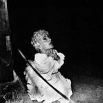

Top 50 Albums of 2010 (Part Two)
Welcome to the second and final part of our Top Albums of 2010 list. The following 25 albums topped a list of over 200 titles handpicked by a team of 24 writers. As ever, this was a collective and democratic process - everyone's votes were counted equally and no editorial bias whatsoever was applied to influence the outcome. In the name of transparency, and for your reading pleasure, we will be posting individual writers lists in the coming weeks.
Joe Rivers has kindly created Last.fm and Spotify playlists, featuring tracks from our Top 50 list. I've been enjoying his selections for most of the week and have already discovered one album I really should have voted for (Warpaint's The Fool). Links are below:
Click here for our Top 50 playlist on Last.fm
Click here for our Top 50 playlist on Spotify
. . .
 25. Broken Social Scene
25. Broken Social Scene
“Forgiveness Rock Record”
(Arts and Crafts)
Original Review
Being the worst Broken Social Scene album is like being the player who comes third in this year’s Ballon D´or – there’s no shame given the competition. In fact, Forgiveness Rock Record was always going to suffer a huge disadvantage being that Broken Social Scene are today one of the stalwarts of the indie-rock scene, having influenced dozens of copycats and therefore making their ability to seem fresh and exciting somewhat muted. But still, the songwriting is what matters and Broken Social Scene have songwriting chops in abundance. Forgiveness Rock Record, for better or for worse, sees them honing this, with less focus on digressional jam sessions and more focus on the immediate impact. The result is predictable, but there’s nothing wrong with being predictably excellent. (Paul Fowler)
 24. Belle and Sebastian
24. Belle and Sebastian
“Write About Love”
(Rough Trade)
Original Review
They’re eight albums in, but Belle and Sebastian still have it. Write About Love — clear proof of that fact — blends the pop nous you’ve come to expect from the Scottish indie stars with their unmistakable Motown penchant. The band takes that sound and doesn’t look back: From start to finish, Belle and Sebastian blend style and substance with the same charming naivety; it’s hard not to smile. Write About Love may not be entirely new ground for Belle and Sebastian, but they’ve honed their sound so much, it’s hard to not be entranced. (Matt Montgomery)
23. Twin Shadow
“Forget”
(4AD)
George Lewis tells stories. Bizarre stories of a twisted youth emanate from his warm voice. The whole record has a welcoming nostalgic feel despite its often strange subject matter, though even that is told in a voice that’s far from bitter. The instrumentation is generally simple, though every song is distinct. His simple guitar lines skilfully highlight the rest of the song, coming in to fill the gaps only when needed. His sound is rarely innovative, but its full, warm and inviting nature and beautifully woven stories make it one of the best albums of the year. (Andrew Baer)
 22. Best Coast
22. Best Coast
“Crazy For You”
(Mexican Summer)
Original Review
Most people approached Crazy For You as the debut LP from the latest hysterically hyped-up buzz band. The response in this situation is to either embrace its very knowing Californian indie-pop vibe, or react against the somewhat contrived nature of the Best Coast project itself. I was fortunate enough to stumble upon its charms without any accompanying baggage. Having taken a few months off listening to new music when my son was born, I hadn't heard a single note of Crazy For You until a mid-afternoon spin of Boyfriend on BBC 6Music won me over in August. By the time I'd read all the reviews, I'd already made my own mind up. (David Coleman)
 21. Surfer Blood
21. Surfer Blood
“Astrocoast”
(Kanine)
Original Review
2010 will arguably go down as the year that surf music went ahead and crashed across the popular music shores and got everyone soaking wet with its squishy emotional sentiments and jangly guitar rock. However, of the onslaught of acts making references to the hell that is love with beach bunny-friendly hooks, no one made it as interesting as Surfer Blood. With pop culture references, a dash of Pixies-ian fury and absurdity, and a sheen of experimentation, Astro Coast is a place we should all wish to be deserted on. (Chris Coplan)
 20. Foals
20. Foals
“Total Life Forever”
(Sub Pop)
Original Review
Foals are one of those groups that turn ordinary people into Gatling guns of hyphenated musical descriptiveness: they are (apparently) post-rock, neo-funk, alt-dance fusionists with a repertoire of awkward math-rock, and danceable synth-pop to justify their position as modern day electro-indie warriors. To be honest that might be too long a genre title for iTunes, so I’ll just let it call them ‘alternative’ instead. Except, that is, well, just… wrong, as Total Life Forever proves in emphatic style. It’s so far from the angular guitars and offbeat rhythms of their debut, replaced with overwhelming, dreamlike keyboard hooks by the bucket load: it’s a fabricated reverie of songs that seem to meld effortlessly together – and it’s certainly worthy of your admiration. Singles material is here aplenty – the first 6 tracks, including Total Life Forever, Spanish Sahara and This Orient, each pulling their weight and more – but it is the fantastical lower order like Alabaster that prove that this LP is no feat of style over substance. (Joe Iliff)
 19. Gorillaz
19. Gorillaz
“Plastic Beach”
(EMI)
Original Review
The whole thing works beautifully, more with each listen. Unless you're, say, The Beatles, Pink Floyd, or Outkast, very few artists are capable of more than three masterpieces in succession, within a decade. Those that hit that mark are all-time greats, and Gorillaz have achieved the magic number. This begs the question of whether this fictional band now stands as pop royalty of their time. Aside from their commendable mainstream popularity, even the misguided purists typically suspicious of overt gimmicks seem to concede an impressive quality to the catalog. Myself, I'm fairly gimmick embracing, yet I still feel a bit silly considering an effort with cartoon avatars for such canonization. Yet here we are, and I can't contrive a good argument against it. In fact, considering the stellar album from supergroup The Good, The Bad, and The Queen, and Blur's under-heard, Coxon-less gem Think Tank, I'm seriously considering Damon Albarn as Pop MVP of the last decade or so. (George Booker)
 18. Swans
18. Swans
“My Father Will Guide Me Up a Rope to the Sky”
(Young God Records)
Original Review
Built from a legacy of experimental noise and industrial cacophony, Michael Gira’s no wave pioneers, Swans, returned after a thirteen-year hiatus with My Father Will Guide Me Up a Rope to the Sky, a solid and relatively accessible foray into the compositionally avant-garde. More of an event than an album, Gira’s catastrophic and, at times, beautiful vision leads to pulsing and intensified carousels of orchestrated dread (No Words/No Thoughts, My Birth, Eden Prison), or lonely folk ditties worthy of sunset (Reeling the Liars In, Little Mouth). Devandra Banhart and Gira’s three year-old daughter Saoirse, provide the vocal for You Fucking People Make Me Sick, a lovely enough introduction that abruptly collapses into an avalanche of piano keys and horn blasts. Theatrically charged and unstable, My Father Will Guide Me Up a Rope to the Sky took a revivalist’s genre and upped the ante enough to make the charlatans cower. (Sean Caldwell)
 17. Joanna Newsom
17. Joanna Newsom
“Have One On Me”
(Drag City)
Original Review
Even fans of The Milk-Eyed Mender and Ys couldn’t have foreseen this: a two hour tour de force spanning eighteen tracks and three CDs. Despite this, Have One On Me is actually Newsom’s most accessible work; she’s cut down on the histrionics and crafted a set of exquisite tracks. Most albums have their lulls, but Newsom has created that near-impossible thing; a long record that’s never dull. Whether it’s the simple balladry of ‘81, the jazz inflections of Soft As Chalk or the epic title track, Have One On Me is never anything less than utterly compelling. (Joe Rivers)
 16. Wavves
16. Wavves
“King Of The Beach”
(Fat Possum)
Original Review
Growing up doesn't have to suck; just ask Wavves frontman Nathan Williams. After making two lo-fi noise explosions on his own, Williams recruited the old backing band of Jay Reatard, entered a proper studio (gasp!), and made himself a record that took the sweet melodies and lyrical concepts of teenage feelings of forlornness that is so much of surf rock music and spun it with his own uniquely weird brand of punk and DIY aesthetics. Surf's up forever, dudes and dudettes. (Chris Coplan)
15. Flying Lotus
“Cosmogramma”
(Warp)
Flying Lotus is the culmination of the last twenty years in IDM. He can make you bob your head and scratch it in confusion all within twenty seconds. His music flows effortlessly and more organically than any other electronic artist out there, and yet he never lets the listener get comfortable and is always ready with a surprise. His songs are cluttered and loose, and the various layers of his beats roll and echo off one another. He just keeps on getting better, and Cosmogramma is no exception. It further cements him as the best, most relevant IDM artist around. (Andrew Baer)
14. Beach House
“Teen Dream”
(Sub Pop)
Original Review
Thick in the midst of a blisteringly cold winter this year an album appeared that seemed to simultaneously capture the essence and brightness of a beaming summers day with the melancholic gloom and blanket covered warmth of a frosty winters day. It was an idiosyncratic and ultimately endearing concoction of emotions, elements and seasons. The album was of course Teen Dream - an album that was a lush as it was sparse and as uplifting as it was eerie. It’s impact was ultimately emphasised by the progression from 2008’s Devotion, the change not merely a step but a giant, floating leap - Victoria Legrand’s voice changing from the lovely to the irresistible, taking on an almost tangible texture that usurped the bands direction. Everything works about his record and it’s ability to transform you and carry you away has not been done as well all year. (Daniel Dylan Wray)
13. Big Boi
“Sir Luscious Left Foot: The Son of Chico Dusty”
(Def Jam)
Original Review
Given the label-drama that plague its history, it’s amazing how Sir Luscious Left Foot ended up being the most straight-up entertaining album of the year. Big Boi’s spacey, funked-out fantasyland doesn’t leave room for angst-riddled furiousness, the closest thing we get to a battle-call is the booming General Patton, but that’s much more of a banger than a thinker. Instead the record is filled with would-be chart-smashers in a parallel universe; (Follow Us, Shutterbugg, You Ain’t No DJ.) The album is full of perfectly off-beat gems of pop-protraction – and Big Boi’s jokey snarl has never been more welcome. (Luke Winkie)
 12. No Age
12. No Age
“Everything In Between”
(Sub Pop)
Original Review
In a year packed with the likes of Ariel Pink's stylised retrofittings and the powder fits of Wavves, No Age held their own in amongst the scuzzed up torrent of pedal fetishists and baked shoegazers. With thirteen tracks built upon a thick, cloudy, broth of fogged up, super 8 haze-punk, Everything In Between is a dense treat of vivd guitar noise walls and entrancing, expansive wash outs. As the dual vocal murmurings of Sprunt and Randell lurch in and out of the foreground the drums roll on, pounding the infinite, beautiful mess of guitar into some order of shape and form. From its momentous, galloping peaks of noise to the blissed out peaceful retreats into ambience, this is the sound of slow motion and light-speed set to the mutters of some surfed out trip-demon set in your ear. (Greg Johnson)
 11. Avi Buffalo
11. Avi Buffalo
“Avi Buffalo”
(Sub Pop)
When Avi Buffalo released their self-titled debut for Sub Pop earlier this year, some of them hadn’t even graduated high school yet. Let that sink in for a moment. Only one of them can legally buy alcohol, which perhaps contributes to the sometimes uncomfortable realness of the teenage lust that drips from each track. Avi Buffalo sounds like a sex-starved MGMT singing classic Todd Rundgren songs to your teenage daughter to try to get into her pants. It is 100% genuine and 100% fantastic. Talk about being off to a good start. (Andy Pareti)
 10. The Tallest Man On Earth
10. The Tallest Man On Earth
“The Wild Hunt”
(Dead Oceans)
Original Review
The Wild Hunt narrowly edged past Ariel Pink's Haunted Graffiti's Before Today to top my personal end of year list. Although I think 2010 will be remembered as a fairly lean year for music, these two gems, along with a handful of others, will undoubtedly stay with me for a long time to come. The Wild Hunt was on heavy rotation In April, and thus became the unofficial soundtrack to the period in which my son was born (I would have had it playing on the Labour Ward had my girlfriend not tired of Kristian Matsson's Dylan-esque warble some weeks before). But my love for this sublime record owes far more to the strength of its compositions than the timing of its arrival in my life; songs like King of Spain and Love Is All possess a timeless quality and have failed to tire despite literally hundreds of plays. Some albums break new ground and challenge the listener; others, like The Wild Hunt, are simply stunning in their simplicity. (David Coleman)
 9. Ariel Pink's Haunted Graffiti
9. Ariel Pink's Haunted Graffiti
“Before Today”
(4AD)
Original Review
In 2010, Ariel Pink made it out of his bedroom and onto 4AD where he and his band, Ariel Pink’s Haunted Graffiti, broke chillwave by making an off-kilter indie pop album called, Before Today. Reducing chillwave’s monotony in order to embark on an all-out pea soup murk rendition of past and present pop mutations, the Haunted Graffiti took bass-laden funk and R&B (Beverly Kills, Round and Round) and new wave and college rock (L’estat (Acc. To the Widow’s Maid), Little Wig) and essentially built a distinctive mix tape, providing evidence that even lo-fi can sound inspiring when it’s not too busy obscuring an obvious lack of musical skill or talent. (Sean Caldwell)
 8. Titus Andronicus
8. Titus Andronicus
“The Monitor”
(XL)
Original Review
We now seem to have arrived at the point in the history of folk music, the people’s music of which rock is just an offshoot, that almost anything is possible – even a melodic punk, concept album about the Civil War from a band named after a particularly gruesome Shakespearean tragedy. And while the fragmentation and disintegration of the popular culture that made it possible has left the eager fan overtaxed in a sea of mediocre music, we can at least be thankful that it allowed The Monitor to bob its head briefly to the surface. When’s the last time you heard a tuneful 8 minute punk song with Springsteenian piano licks and multiple sections that would make Yes proud? Sounds like everything you hate? Think again. (Alan Shulman)
 7. Liars
7. Liars
“Sisterworld”
(Mute)
Original Review
Sisterworld is a swifting, swirling mass of effects-laden drums, guitar, bass, and voice that represents the epitome of the pioneering musical techniques of our era. Their record may or may not stand the test of time: I cannot tell at this point in time. However, it will forever be a stamp on history marking a significant moment of evolution in recorded music. (Preston Bernstein)
 6. Janelle Monáe
6. Janelle Monáe
“The ArchAndroid”
(Bad Boy)
Original Review
In 2010, Janelle Monáe arrived - seemingly from another planet - intent on saving popular music. Her modus operandi was to create an album which was basically a whistle-stop tour of as many trends in pop and soul of the last century as possible. Despite taking in myriad genres, Monáe managed to make The ArchAndroid come together as a whole through sheer exuberance and force of personality. Tightrope and Cold War were two of the singles of the year, but Monáe showed she wasn’t afraid to take risks, branching out into classically-inspired epics (BeBopByeYa) and collaborating with Of Montreal (Make The Bus). If someone had told you twelve months ago that a concept album about an android woman from the future would be one of the records of the year, you’d have thought they were mad, but in 2010, a star was born. (Joe Rivers)
5. Deerhunter
“Halcyon Digest”
(4AD)
Original Review
Don’t let anyone else tell you otherwise. Deerhunter have come a long way since their days of throbbing noise experiments and noise pop flirtations. Halcyon Digest is not disconcerted with sounding vintage, keeping Bradford Cox’s dreamy delusions close to hand while bestowing a profound reverence for the music that has inspired him throughout his vocation. In spirit, he evokes a younger Joey Ramone, whose unequivocal knowledge of pop history drives him to inject a serviceable sound without abandoning a penchant for emotional balladry. However, Cox works best in a collaborative tone - the compositions sound exact, willing to compromise to the song’s necessities instead of expanding them for grander effect. Halcyon Digest is another enthralling step forward for a group of musicians who obsessively live and breathe what they do, furthering their career by downsizing their ambitions. And in the process, collecting a listenable compendium of bleak optimism that never fails to impress. (Juan Edgardo Rodriguez)
4. The National
“High Violet”
(4AD)
Original Review
The National are a band who have been building a back catalogue steadily for almost ten years, and despite High Violet being their fifth album to date it is still perhaps not their best we could expect. However, the cumulative effect of these five albums is enough to convince us of their unique talent - there is an element of staunch reserve, and rarely does a band emit such musical intensity yet play it down, as Matt Berninger’s acutely laconic lyricisms penetrate their mellifluous and rhythmic compositions. High Violet is unrestrained melodically (not that they have ever shied from tuneful expression) but here the harmonies are more prevalent and ethereal, grounded by Berninger’s terse but engaging North American drawl. The National have proved themselves to be constant deliverers of quality indie rock that will be unlikely to age, perhaps even become more relevant as many listeners look for bands who hone their craft. (Neil Insh)
3. Kanye West
“My Beautiful Dark Twisted Fantasy”
(Def Jam)
Original Review
My Beautiful Dark Twisted Fantasy was not unexpected. Given Kanye’s splinter-brain self-conscious ego and the raucous energy of Power, the public could expect something massive bubbling under his Versace-shade skull. But still, Dark Fantasy stands alone in a frenzy of celeb-drunk megalomania - a gorgeous, psychotic, melancholic, hallucinogenic eruption of ambition, wealth, and displaced emotions. Kanye flings his genius so far out into creativity’s graces that it comes back barely even recognizable as a hip-hop album. Runaway languishes in a remorseful, robotic wail, All of the Lights comes with a theatric interlude attached, and the unbelievable closer Lost in the World is essentially a choral piece. This isn’t Kanye’s strongest album by pure rap-craft, it’s his strongest through pure musicianship, creating a record that can inspire independent reactions out of the whole world. My Grandpa likes Lost in the World, enough said. (Luke Winkie)
 2. Arcade Fire
2. Arcade Fire
“The Suburbs”
(Merge)
Original Review
Records that truly matter can stand the test of time. They don’t bow down to genres – they create their own. These records don’t just capture a current zeitgeist – they define a generation. Arcade Fire’s The Suburbs captures the ennui of middle-class suburban life: The frustration and apathy, the despondency and tedium. But underlying Win Butler’s bleak lyricism is a sense of hope and optimism. It’s the deft mixture of the two aesthetics that makes The Suburbs such a pleasure. The record captures a generation lost in the chaos of recession and war and environmental meltdown; it is an instantly nostalgic snapshot of the present day. Butler’s apathetic passion chills, and The Suburbs leaves an indelible mark on your subconscious. This is a record that will endure as its own entity, a record we can proudly call a classic – a record that will not be forgotten. (Lukas Clark-Memler)
 1. LCD Soundsystem
1. LCD Soundsystem
“This Is Happening”
(DFA)
Original Review
LCD Soundsystem polled seventh in 2005 and Sound of Silver stormed to second place in 2007, so it was perhaps inevitable that James Murphy's latest (and alleged last) LCD Soundsystem record would chart in the top ten this year. We also awarded it a perfect 10/10 rating in our original review, which was another fairly strong indication. In the absence of an obvious frontrunner à la 2009's Merriweather Post Pavilion, this year's top spot was always going to be up for grabs and I was secretly delighted when This Is Happening pipped The Arcade Fire and Kanye West to the post by the narrowest of margins. While Sound Of Silver remains far and away my favourite LCD album, its successor is equally focused and features more than its fair share of thrilling moments. From the call and response delights of Drunk Girls to the crisp beats and late 70s atmospherics of Pow Pow, this is a record that showcases everything Murphy and his crew do so well. This Is Happening is a worthy #1 from one of the century's first great bands. Here's hoping he tries his luck a fourth time... (David Coleman)
. . .
So, that was the Top 50 Album of 2010 as chosen by the No Ripcord staff. What did we get right and what did we get wrong? Were you surprised to see one of your favourite records of the year miss the list altogether? Let us know your thoughts by commenting below. An end of year list is nothing without a fiery debate, so please get in touch.
16 December, 2010 - 21:16 — No Ripcord Staff